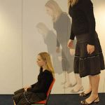

Los psíquicos no perciben neutrinos. Estos seres especiales, capaces de captar con sus poderes paranormales diversos elementos invisibles, distinguir colores alrededor de nuestros cuerpos (auras), percibir el estado de cualquier espíritu y hasta descubrir mensajes en el espacio, el futuro, el pasado y el más allá, no pueden detectar neutrinos. Tampoco saben utilizar sus extraordinarios poderes para ahorrarles el trabajo, los costos y la investigación a los físicos en la famosa búsqueda por la tan elusiva partícula Higgs o, sencillamente, interceder por nosotros a nivel molecular (por lo menos es un rango más visible) y establecer de una vez por todas una forma de detener el cáncer. Al final, es siempre la ciencia al rescate.
“Es imposible estudiar lo que no es materia y el espíritu no es materia. Dios es inmaterial. Lo espiritual siempre será inalcanzable para la investigación, al igual que la fe”.
Aquellas palabras hicieron que resintiera haber salido de casa y añoré la familiar reclusión que me brinda el ordenador; la voz que hablaba pertenecía a una vieja conocida lo suficientemente perseverante como para convencerme de asistir a aquella pequeña reunión de “conocidos de antaño” donde prontamente me advertí minoría. El quórum en la ecléctica mesa de almuerzo acordaba con ella, vivían todos en mundos de espiritualidades distintas. Una de las mujeres se considera, de hecho, una mística y la escuché aseverar poderes para curar; su vecino a la derecha, un hombre de unos 45 años, pertenece a los carismáticos católicos pero también dice ser ‘gurú’ (más de dos horas con él y no logré discernir qué tipo de gurú es); la pareja dispareja frente a mí está compuesta de una joven que no llega a los 25 y se autodenomina astróloga y él, rondando los cincuenta, que dice haber tomado la astronomía como pasatiempo para ayudar a su prometida a formular nuevos signos zodiacales al incluir planetas que los Mayas y Aztecas habían observado; y, finalmente, la que hablaba, mi ‘amiga’, quien es psicóloga y católica. Mi materialismo científico rebotaba frustrado entre mis neuronas; la espiritualidad no es un concepto que me defina, sin embargo, siempre intento extraer algo positivo de cualquier experiencia y, cuando no encuentro absolutamente nada, inicio conversaciones sobre la serie de comedias ‘Seinfeld’, me ha salvado el pellejo en varias ocasiones.
“Aquí hay mucha espiritualidad en esta mesa”, expresó la sonriente mística, enfriando en cortos soplos su sopa de cebolla; debió haber leído la incredulidad en mi rostro pues continuó diciendo, “la espiritualidad se percibe igual como se siente el amor”. El trago sonoro del aromático líquido puntualizó su perorata.
Les pregunté entonces si pensaban que era posible estudiar el amor. Sus titubeantes respuestas provocaron un silencio que aproveché para hablarles sobre las investigaciones neurológicas, conductuales y biológicas que han avanzado el conocimiento que hoy tenemos sobre cómo se originan las emociones en el cerebro. También ofrecí algunos ejemplos en el gran reino animal, donde otros tipos o grados de ‘amor’ son observados. Les hablé de la investigación sobre orgasmos, de los cambios que ocurren no sólo a nivel cerebral sino por todo el cuerpo cuando la persona enamorada observa al objeto de su deseo: desde las encantadoras mariposas en el estómago hasta el rubor, el incremento en las palpitaciones cardiacas y los cambios de temperatura. Les conté, además, cómo se ha investigado y analizado el amor mediante el estudio de las distintas culturas en el globo. De hecho, un vistazo a las diferentes formas de amar que tienen las personas por el mundo muestra efectivamente el influyente papel del medio en el modo en que pensamos y actuamos. El enamoramiento cerebral puede ser el mismo en todos los humanos pero el lugar donde damos nuestros pasos de formación dictará las pautas sobre cómo nos enamorarnos y mostramos nuestro amor.
Así también, les comenté animadamente, se puede estudiar la espiritualidad.

Pero no todos se enternecen con la idea de que la serotonina es el neurotransmisor de lo místico o de que sus dioses se encuentran en el lóbulo temporal. Sé que estoy sintetizando lo que son las primeras deducciones de la experimentación en el área ya que el proceso de sentirse un ser espiritual es también moldeado por las culturas y, en este caso en específico, por las religiones que éstas alojen. Si el amor, esa emoción tan fuerte que nos impulsa actuar de las más disparatadas maneras, puede ubicarse en el cerebro y rastrear sus huellas en las distintas sociedades y por diversos momentos en la historia de la humanidad, asimismo podemos escarbar ese sentimiento místico entre las neuronas. Ambos son invisibles, el amor se ve tanto como el espíritu, no obstante, son impresiones que podemos medir en los cambios biológicos y observar en nuestras conductas.
Tristemente, muchos piensan que conocer cómo funcionan las piezas que conforman al mundo le resta toda la magia a la vida. Soy de la opinión contraria. Cada vez que leo la explicación de algún mecanismo o efecto que desconocíamos, siento, además de una satisfacción intensa, una admiración sobrecogedora hacia la naturaleza y hacia los que la estudian; comprender sus componentes provee al Universo de un valor indescriptible y una magia inagotable. En ese sentido, el órgano productor de pensamientos es uno repleto de deliciosas y a veces extravagantes sorpresas.

En el área de la espiritualidad, el sentimiento de sentirse “uno con el Cosmos o con Dios”, es expresado por muchas personas que dicen tener experiencias místicas o divinas. En los últimos años, varios neurólogos han rescatado experimentos que se realizaron durante la década de los sesenta y que involucraban alucinógenos tales como LSD, hongos, mezcalina y peyote. De hecho, este último es todavía usado por tribus de indígenas que relacionan la experiencia que produce la actividad de estas sustancias en el cerebro con enseñanzas espirituales que son el núcleo central de sus ritos y creencias.
Roland Griffiths, de la Universidad de Johns Hopkins en Baltimore, el neurocientífico Michael Persinger de la Universidad Laurentian en Ontario, Orrin Devinsky, profesor de la Universidad de Nueva York, el anestesiólogo Gerald Woerlee, autor del libro “Mentes mortales” y Richard Sloan, profesor de medicina conductual en la Universidad de Columbia, son algunos de los investigadores que han estado metiendo sus narices en esta controvertida área donde tanto creyentes como no creyentes abanderan razones varias en su contra. Sin embargo, como ocurre en tantas ocasiones, los casos clínicos gozan de voz propia.
Es lo que ha ocurrido con la voz de Dios, el lóbulo temporal y la epilepsia, una trinidad muy distinta a la religiosa. Aquí en SinDioses hemos publicado varios artículos sobre el vínculo que existe entre los epilépticos y la ocurrencia de alucinaciones varias, entre las más frecuentes se reportan voces angelicales y conversaciones con dioses. Tomemos ahora el ejemplo de Jeff Schimmel, un escritor judío de 49 años quien nunca estuvo interesado en el tema de Dios hasta que un cirujano tocó sus neuronas. En un reportaje escrito por Barbara Bradley Hagerty, para NPR (National Public Radio, www.npr.org), Schimmel explica cómo, unos diez años atrás, un tumor benigno fue extirpado de su lóbulo temporal derecho en una cirugía sin mayores problemas…o eso pensaron todos. Sin embargo, desde ese momento y sin saberlo, Schimmel comenzó a tener mini convulsiones, escuchaba conversaciones en su cabeza o, de repente, las personas a su alrededor parecían animaciones. También comenzó a padecer visiones, colores varios se formaban frente a él y en una ocasión le pareció ver a la Virgen María.
“Me reí. ¿Qué podría querer la virgen visitándome a mí, un hombre judío? Pero desde ese día mi vida comenzó a inclinarse más hacia las experiencias espirituales”, explicó. Poco tiempo después, sus médicos lo diagnosticaron con epilepsia del lóbulo temporal. “Muchos creen que es el lugar donde se alojan los dioses”, agrega.
Para la mística a mi lado, “la ciencia está limitada a descubrir cuáles regiones usa Dios para comunicarse con esos humanos que son más sensibles a las experiencias paranormales. No quiere decir que no exista la espiritualidad”.
Y tiene razón, la espiritualidad existe, se aloja dentro de nuestro cerebro o es creada allí por los neurotransmisores, las hormonas y nuestras experiencias, así como el amor y al igual que los dioses. De hecho, si quiere sentir una presencia misteriosa cerca de usted, sólo tiene que ponerse el no muy majestuoso ‘casco de Dios’ que se encuentra en el laboratorio de neurología de Persinger en Ontario, Canadá. El mecanismo completo usa ocho electrodos que se adhieren a la cabeza y luego un casco de motocicleta adaptado con sensores que envían débiles ondas electromagnéticas al lóbulo temporal derecho con el objetivo de originar en el usuario la idea de que no se encuentra solo, de que una presencia lo acompaña, una presencia que no puede ver.
El casco funciona. Persinger es capaz de crear una experiencia espiritual manipulando el lóbulo temporal. “Hubo un momento en que comencé a percibir una oscuridad diferente, algo oscuro parecía rodar cerca de mí, a mi izquierda. Pude además ver un rostro y otras imágenes”, expresó Bradley Hagerty quien usó el casco para escribir sobre la experiencia. Persinger es capaz de predecir, escuchando a los voluntarios hablar mientras tienen el casco en sus cabezas y sin que ellos lo escuchen a él, en qué momento la persona expresará que siente una presencia imponente que no puede ver o que ve una imagen o varias.
Pero al igual que el placebo, que no es una sustancia sino una idea que produce un efecto, es posible explicar esta representación de la espiritualidad a través de los mecanismos varios que la originan, ya sean químicos, como la serotonina, que inducen sentimientos místicos o que se traten de descargas eléctricas en el lóbulo temporal que propician alucinaciones donde la persona cree escuchar dioses, cantos angelicales o tener visiones. De hecho, estudios varios han demostrado que nuestras conductas pueden moldear el cerebro. Por ejemplo, meditar intensamente traza cambios en algunas redes neuronales; estos cambios, a su vez, desencadenan emociones varias que, de acuerdo a nuestras creencias, definimos como de tipo espiritual. A lo mejor son enjutas, funciones nuevas para mecanismos viejos que una vez nos ayudaron a sobrevivir, a lo mejor fueron originadas por el tiempo, las necesidades y las culturas o, más apropiadamente, por una combinación de todo lo anterior. Pero nunca es bueno subestimar el poder de un químico cerebral, el modo en que corre por las neuronas puede explicar conductas y decisiones. Y, por cierto, este hecho no nos convierte necesariamente en fríos robots biológicos sino que nos define como unas portentosas estructuras naturales con asombrosas habilidades para descubrirse…y también al mundo a su alrededor.
“Estoy seguro de que es el trabajo del Espíritu Santo que transforma nuestros cerebros para que podamos ejecutar una mejor labor por el bien de la humanidad”, expresó jovialmente el carismático con la anuencia de los demás. Ordené otra copa de vino y sonreí.
“Mi personaje favorito de la serie no era Kramer, era George, pero mi mamá tampoco soportaba a Elaine”, me escuché comentar mientras ordenábamos el postre.
Esa luz que entra por el túnel es falta de oxígeno
Muerte después de la muerte
El más allá es patrocinado por la muerte. Es tan difícil aceptar la irreversible pérdida que convertimos la despedida en un hasta pronto. Dios tiene la respuesta, el alma sobrevive y morir se convierte en un paso más, un viaje, un pasaje hacia un mundo mejor. Arrebatar esta esperanza a un doliente es considerado peor que colocar a Cupido y al Espíritu Santo bajo el microscopio, es, sencillamente, un acto cruel. El atascadero lo padecemos entonces las personas que necesitamos de evidencias para creer; no es que deseemos hacer la vida más dificultosa para todos, simplemente y con suprema sinceridad, se nos hace imposible tomar lo que nos dicen como cierto sin una dosis de certificadas pruebas detrás. Además, las experiencias personales tienen el mismo valor para la ciencia que un juego de cubiertos para un bebé. “Existe un potencial latente. Puedes iniciar una pesquisa de una experiencia o todo un estudio si muchas personas reportan lo mismo, pero hasta que la experimentación no ofrezca frutos, no es admitido ofrecer anécdotas como evidencias”, nos explica la neuróloga Amy Roebuck de la Universidad de California en Santa Bárbara.
El abandono del cuerpo, la luz al final del túnel y las conversaciones con seres queridos que ya han muerto son algunos de los escenarios comunes en los relatos de personas que han estado clínicamente muertas o inconscientes. Por supuesto, los investigadores desean saber qué realmente está ocurriendo en el cerebro cuando morimos, pero ya de entrada son evidentes los obstáculos con este tipo de experimentación.
“No es posible extraer resultados precisos del estudio del más allá o de lo que muchos llaman el alma. Es imposible matar personas y seguirlos hacia donde sea que vayan y es por eso que muchos pensamos que es una pérdida de tiempo, imposible convencer a nadie porque no es posible realizar experimentos claros y concretos con elementos que no sabemos si existen o no”, explica Roebuck.
El anestesiólogo australiano Gerald Woerlee se muestra escéptico respecto a este tipo de experiencias. “No creo que debamos explicar reacciones que pueden deberse a la falta de oxigenación cerebral a través de las elucidaciones de individuos en situaciones extremadamente vulnerables y estresantes para sus cerebros. La ciencia no progresa mediante anécdotas personales aunque sí pueden formar la base para una investigación. Igual, hasta que no constatemos el patrón y científicos varios corroboren nuestros resultados, es imposible hablar de evidencias. Como anestesiólogo, he visto al cerebro actuar en formas particulares. Existe lo que llamamos la consciencia bajo anestesia, es algo bastante raro, sólo ocurre una vez por cada dos mil cirugías, la persona está consciente pero no se puede mover ni sentir y esto puedo ocasionar distintos tipos de alucinaciones y explicar por qué ciertas personas aseguran haber escuchado la conversación entre los médicos durante la cirugía”, dice.
Ahora bien, más allá de los esclarecimientos neurológicos que definen el déjà vu como un error de la memoria, la neurología también ha conseguido descubrir otras percepciones desatadas por deslices neuronales que pueden producirse mediante la hipo o hiperestimulación cerebral. Neurólogos han logrado simular la experiencia de flotar fuera del cuerpo en los laboratorios mediante mecanismos similares al casco de Persinger. Varios reportes han sido publicados de personas que experimentan salirse de sus cuerpos, al neurólogo manipular ciertos tipos de ondas cerebrales (algunos de estos trances pueden ser desatados por los retumbos constantes que originan los tambores, como los que suelen usarse en distintos tipos de rituales) o mediante el envío de pulsaciones electromagnéticas a la región del lóbulo parietal.
Estas explicaciones brindan coherencia a mi definición de la existencia, como tentativas piezas de un interminable rompecabezas. A lo mejor, al perder un ser querido experimente la despedida de forma más brusca y terminante que las personas que anidan la esperanza del más allá y de ver a sus amores nuevamente. Pero no lo creo, no realmente, he visto el dolor que tiñe los funerales y nunca me ha parecido que allí exista la menor esperanza de un reencuentro. Indiscutiblemente, la muerte duele…creamos o no.
Volver al índice de la Lupa Herética
© 2008-2023 Glenys Álvarez y Sin Dioses. Prohibida la reproducción con fines comerciales.
Comentarios
Comments powered by Disqus